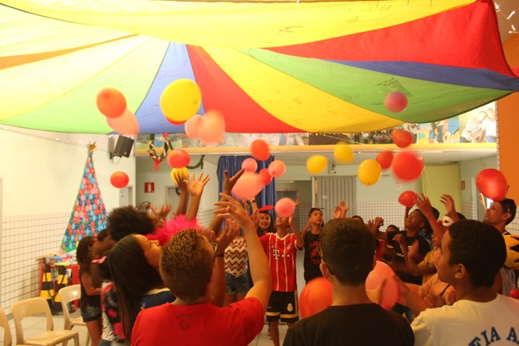

Últimas notícias do bairro
Troca de tiros deixa dois feridos na Cabana do Pai Tomás
04/02/2021 - Feito por: Ivan Drummond

Dois homens ficaram feridos após a perseguição da Polícia Militar a um veículo fugitivo, com troca de tiros, na tarde desta quinta-feira (4/2), próximo à Cabana do Pai Tomás, Região Oeste de Belo Horizonte.
Tanto um homem, de 54 anos, quanto um suspeito levaram tiros na perna esquerda. A perseguição teve início na Rua Rio Branco, no Bairro Amazonas.
Policiais que passavam pelo local estranharam o fato de um homem escalar a grade de uma casa. Quando os policiais gritaram para o homem parar, ele saltou da grade e entrou no veículo, um I30, que arrancou em alta velocidade. Os policiais saíram em perseguição.
O veículo foragido seguiu para a Cidade Industrial. Lá, um dos três ocupantes desceu do veículo e fugiu em direção ao Itaú Power Shopping.
Policiais que chegaram ao local ficaram sabendo por testemunhas, que o homem havia entrado num ônibus de cor roxa, que seguia em direção a Belo Horizonte. Os policiais tentaram encontrar o veículo, mas não conseguiram.
Enquanto isso, o I30 seguiu a fuga, entrando na Avenida Amazonas, em direção ao Centro de BH, tendo no seu encalço uma viatura da PM.
Ao se aproximar do Anel Rodoviário, o motorista perdeu o controle do veículo e bateu numa placa de sinalização. Os dois ocupantes do carro abriram a porta e iniciaram uma fuga. Um deles tinha uma arma e a apontou para os policiais, que atiraram, atingindo a perna do suspeito.
Este, por sua vez, também efetuou um disparo, que atingiu o transeunte. Ele foi socorrido e levado para o Hospital Municipal de Contagem.
O suspeito ferido foi detido e também foi levado para o hospital. Nenhum dos dois corre risco de morrer. O veículo, segundo os policiais, era clonado. Tinha placa MWM 8585, que era clonada. A placa verdadeira é PET 0846 e o veículo foi roubado no final de 2020.
Centro juvenil de BH pede ajuda para arrecadar cestas básicas para famílias da Cabana Pai Tomás
23/03/2021 - Feito por: Chiara Ribeiro
 A pandemia do novo coronavírus impactou a vida das pessoas de várias maneiras. Seja no setor econômico, no social ou no psicológico, a crise causada pelo vírus desconhecido afeta o mundo diariamente.
Quando se trata das classes sociais com menor renda, o impacto é ainda maior, já que as pessoas muitas vezes convivem também com o desemprego e a fome e dependem de auxílios do governo para se sustentar.
É exatamente essa dificuldade econômica que levou o Centro Juvenil Dom Bosco, obra social Salesiana, a pedir ajuda para arrecadar cestas básicas para famílias da favela Cabana Pai Tomás, que fica na região Oeste de Belo Horizonte.
De acordo com Carolina Neves de Oliveira, gerente socioeducativo pastoral do centro juvenil, atualmente o projeto atende 152 famílias e nem todas recebem o benefício municipal de cestas básicas e kits de higiene, já que os filhos estudam na rede estadual de ensino. Ela ressalta que o fato das atividades socioeducativas estarem suspensas faz com que o consumo das residências aumente, o que gera ainda mais dificuldades.